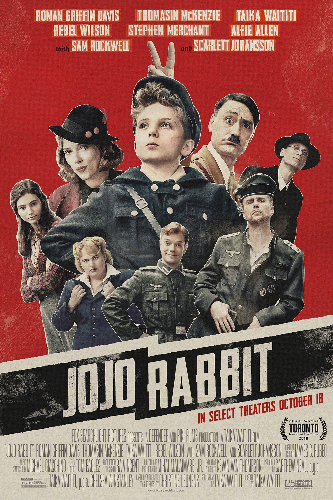

Case Study
Not defined by just one genre
We took Searchlight Pictures’ polarizing anti-hate satire and adopted an innovative social platform strategy to redirect community conversation from problematic to positive.
Capitalizing on our collective and deep knowledge of entertainment fandoms, we brought diverse and passionate audiences to some of the most acclaimed films of the new millennium with innovative social strategies, authentic community management that demonstrated this studio was truly listening, and bespoke creative that stopped feedscrollers in their tracks.